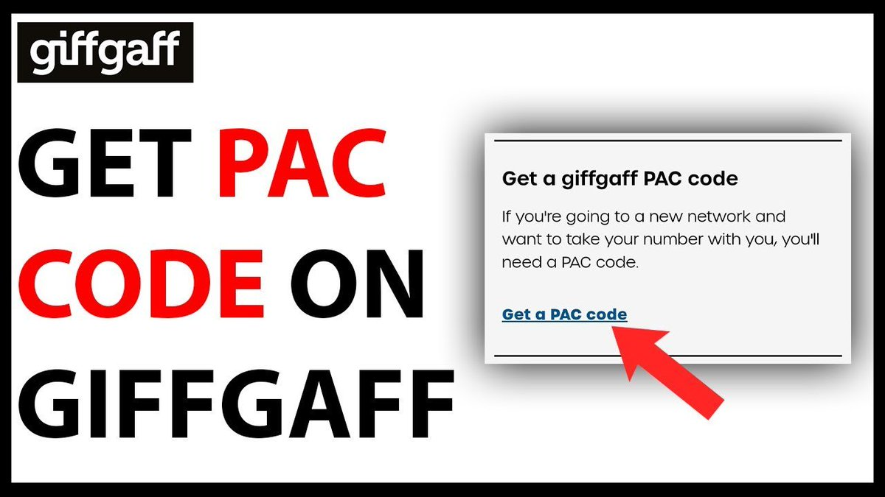

pac代码获取：
https://t.co/MCFbA4LyzK


如果你的giffgaff卡被封，别着急给这个英国号码判死刑，也许还有得救！
那就是拿PAC代码携号转网，转到英国别的运营商（CTExcel、CMLink、Voxi、Lyca等）
当然话费是转不走的，如果你有强烈的诉求可以去ofcom上投诉giffgaff，侵占你个人的财物。或许不一定管用，但是投诉的人多了，可能管用 https://t.co/9Q6Oyz8lXl
那就是拿PAC代码携号转网，转到英国别的运营商（CTExcel、CMLink、Voxi、Lyca等）
当然话费是转不走的，如果你有强烈的诉求可以去ofcom上投诉giffgaff，侵占你个人的财物。或许不一定管用，但是投诉的人多了，可能管用 https://t.co/9Q6Oyz8lXl